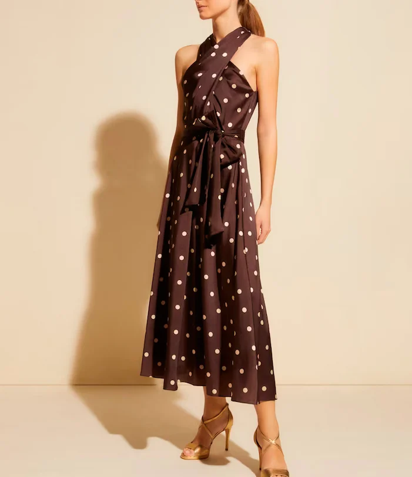

El vestido más icónico de 'Pretty Woman' tiene un clon perfecto disponible para ocasiones especiales
Julia Roberts lució varios modelos memorables en Pretty Woman, pero uno de los más emblemáticos es el vestido marrón con lunares blancos que usó en una carrera de caballos. Este vestido se ha convertido en objeto de imitación para varias tiendas y marcas de ropa, y sigue siendo uno de los más populares para imitar debido a su estilo clásico y versátil.
A pesar de que el personaje de Vivian en la película estaba pasando por un momento incómodo, Julia Roberts lucía radiante con este vestido.
Un clon impresionante

Debido a su condición de película icónica, es difícil no pensar en Pretty Woman cuando se ve un vestido marrón con lunares blancos. Varias marcas de ropa, como Zara, Massimo Dutti, H&M y Mango, han creado versiones propias del vestido a lo largo de los años.
Ahora, una nueva versión del vestido perfecto para ocasiones especiales está disponible para su compra.